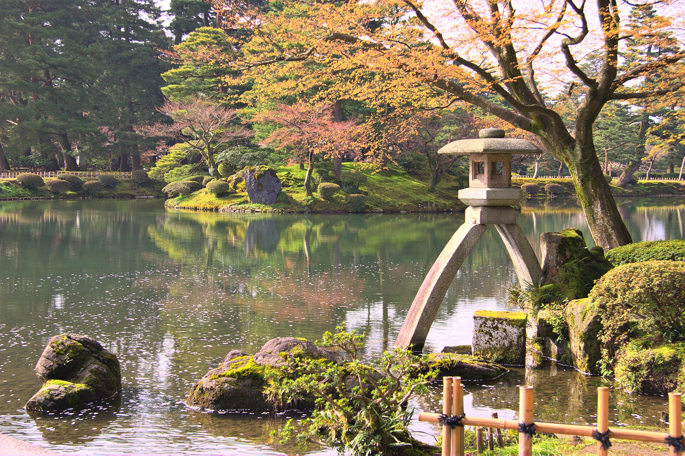

Kanazawa · 5-day family itinerary
One base by Kanazawa Station, Kenroku-en before the crowds, and every day placed around the closing days of the places in it, so the museum day lands on a day the museum is open.

Photo: KimonBerlin, Kotojitoro (lantern) in Kenrokuen garden, Kanazawa, Japan, CC BY-SA 2.0, via Wikimedia Commons.
_in_Kenrokuen_garden,_Kanazawa,_Japan_(2621640037).jpg){kind=link}
Before you commit
This illustrative route keeps four nights by Kanazawa Station and uses the Kanazawa Loop Bus, short walks and the odd taxi. The order of Days 3 to 5 follows the closing days of the places in them. Nothing below was live-checked for a chosen date.
One hotel near the station’s East Exit. Omicho Market, Kenroku-en, the castle park, the 21st Century Museum, Higashi Chaya and Nagamachi are all on the Loop Bus. No second hotel and no long day trip.
One anchor a day, then a rest. The garden day starts early. The museum day goes on a day the museum is open. The teahouse district goes on the day the museums close.
Train times, museum dates, garden hours and the temple’s phone booking were not live-checked for your dates. A booking-hub link is intent only. It does not buy a train seat or hold a museum ticket.
Planning boundary: dates are illustrative. The worked example runs Saturday 10 to Wednesday 14 October 2026, because Monday 12 October is Sports Day, a national holiday, and that moves a museum closure. The hours, fees, closing days and transfer times below come from pages opened on 7 October 2026. Alfred does not check a venue’s closing calendar while it writes the day. Book opens a partner checkout. It does not prove that a ticket exists. Kanazawa is not one of the destination guides in the signed-in app.
Route and family-coordination brief
Party: two adults and school-age children. A preschooler is allowed for, with one exception noted on Day 4. If grandparents come, Kenroku-en is free for visitors aged 65 and over who show official ID with their age. Base: four nights near Kanazawa Station. Pace: moderate, one anchor a day. Budget input: Mid Range. The only prices stated here are the ones a page actually printed.
Getting there: Visit Kanazawa, the city’s official tourism site, lists Tokyo Station to Kanazawa Station at about 2 h 30 min by Hokuriku Shinkansen, and Osaka Station to Kanazawa by Limited Express Thunderbird to Tsuruga, about 1 h 20 min, then the shinkansen, about 40 min. Flying into Komatsu Airport, the airport bus to Kanazawa Station takes about 40 min.
Getting around: Visit Kanazawa says the Loop Bus costs ¥220 for adults and ¥110 for children per ride, and takes cash, IC cards such as Suica and ICOCA, and contactless credit cards. The Right Loop runs every 15 minutes from 8:30 a.m. to 6:00 p.m. and the Left Loop every 20 minutes from 8:38 a.m. to 5:58 p.m., both from the station’s East Gate. A One-Day Pass exists, but its adult price did not display correctly on the page, so no pass price is given here. Board at the rear door and pay as you leave.
The closing-day order: the 21st Century Museum’s exhibition zone and the D.T. Suzuki Museum both close on Mondays, and on the next weekday when the Monday is a national holiday. Kenroku-en and the Shima teahouse list no weekly closing day. So the museums go on Day 3, Monday 12 October, a holiday on which they are open, and the teahouse district goes on Day 4, Tuesday 13 October, when both museums are shut. If your dates have no holiday Monday, move the museum off Monday and keep the rest.
Day 1 — Arrive by shinkansen and eat at Omicho Market
Take a Hokuriku Shinkansen from Tokyo. As one example, JR East’s timetable page for Kagayaki 525 shows Tokyo at 08:33 and Kanazawa at 11:07 on the dates its calendar marks. Leave bags at a hotel near the East Exit. If your hotel can’t take bags before check-in, ask it, not the timetable.
Lunch is Omicho Market, about 15 minutes on foot from the station on Visit Kanazawa’s walking list, or by Loop Bus to “Musashigatsuji Omicho Market”, the first market stop on both loops. Its page lists business hours of 9:00 to 16:00, varying from store to store, and more than 170 stores, many of them fishmongers. Arrive by early afternoon, because the listed hours end at 16:00 and vary by store. No restaurant is named here, because no restaurant page was opened.
On Saturdays, the castle park’s evening opening runs from sunset until 21:00 with free entry at the Ishikawa-mon, Nezumita-mon and Gyokusen’inmaru entrances. Visit Kanazawa also lists a Light-Up Bus that runs only on Saturday evenings. Both are optional. Most families will want an early night after a morning train.
Fallback: if the train runs late and the market is closing, eat at the station and move Omicho to the morning of Day 4 or Day 5. Do not start Kenroku-en on arrival day.
Day 2 — Kenroku-en early, then the castle park
Take the Loop Bus to the Kenrokuen Garden/Kanazawa Castle stop, or a taxi. Visit Kanazawa estimates about 15 minutes and from ¥1,800 by taxi from the station. Kenroku-en’s guidance page, opened 7 October 2026, lists hours of 7:00 to 18:00 from 1 March to 15 October, and 8:00 to 17:00 from 16 October to the end of February. Adults (18 and over) pay ¥320 and children aged 6 to 17 pay ¥100, cash only. A Kenrokuen+1 ticket for ¥500 covers the garden and one more cultural facility in the city.
Early birds can enter free before opening. From 1 September to 31 October that starts at 5:00, but only through the Renchi-mon and Zuishinzaka entrances, and you must leave 15 minutes before regular opening. With children, a 7:00 paid entry is the more realistic target. The garden says it has many slopes, and lends wheelchairs free at four entrances.
Cross into Kanazawa Castle Park. Its Tsurunomaru Rest House is open 9:00 to 18:00 from 1 March to 15 October, with a free VR film on the Ninomaru Palace of about 10 minutes, with English subtitles. Gyokusen-an, above Gyokusen’inmaru Garden, serves matcha with a sweet for ¥1,000, from 9:00 to 12:00 and 13:00 to 16:30. The park’s home page links to a status page on restoring stone walls damaged in the Noto Peninsula earthquake. That page was not opened, so check it for closed paths before you go.
Back to the hotel after lunch. No second anchor.
Fallback: in rain, keep the garden short, spend the time in the Tsurunomaru Rest House and its theatre, and take a taxi back. After 15 October the garden opens at 8:00, so shift the morning one hour.
Day 3 — The 21st Century Museum, on a day it is open
Go to the 21st Century Museum of Contemporary Art, 1-2-1 Hirosaka. The Loop Bus stops at “Hirosaka·21st Century Museum”, about 20 minutes from the station on the museum’s access page, and Visit Kanazawa puts it 3 minutes on foot from Kenroku-en’s Mayumizaka Gate. The exhibition zone opens 10:00 to 18:00, until 20:00 on Fridays and Saturdays. The public zone opens 9:00 to 22:00.
The exhibition zone closes on Mondays, and on the next weekday when Monday is a national holiday. Its closed-days list for October 2026 shows the 5th, 13th, 19th and 27th. Monday 12 October, Sports Day, is not on it, so the museum is open today and closed tomorrow. The list also shows a temporary opening on Monday 26 October and a temporary closure on Tuesday 27 October. Check the list for your own dates.
The collection exhibition “Walking, Staying” runs to 18 October 2026. The ticket page lists ¥450 for adults, and free entry for students below university level, though a ticket is still required. A notice on the museum’s site says the Swimming Pool closes from 19 to 30 October 2026. Another says the museum will close for renovation from 6 May 2027 to March 2028, as planned. The museum has a nursing room, baby seats in two multipurpose toilets, and coin lockers that return your ¥100.
Optional for older children and adults: the D.T. Suzuki Museum, about 5 minutes on foot from the “Honda-machi” stop. Visit Kanazawa lists 9:30 to 17:00, with entry by 16:30, and ¥310 for adults. Under high-school age is free. It follows the same Monday rule, so it is open today and closed tomorrow.
Fallback: if your trip has no holiday Monday, swap Days 3 and 4 so the museum is not on a Monday. If the museum is busy, use the free public zone and come back on a Friday or Saturday evening, when the exhibition zone stays open to 20:00.
Day 4 — Higashi Chaya on the day the museums close
Take the Loop Bus to “Hashiba-cho”, then walk about 5 minutes into the Higashi Chaya District. Visit Kanazawa says it is a shopping district, not a theme park, with no set hours or admission. Most shops open from 10:00 a.m. to 5:00 p.m. Eating while walking is not allowed in the district, except in the designated areas, so plan to sit down inside a shop.
The Shima teahouse, 1-13-21 Higashiyama, is open 365 days a year. Visit Kanazawa lists 9:30 to 17:30 from March to November, ¥500 for adults and ¥300 for those aged 16 and under, and about 15 minutes for a visit. Green tea with a sweet costs extra. The district takes about an hour on the same page, longer with shops and sweets.
Afternoon: back to the hotel. Families with no preschooler can instead book Myoryuji, the “Ninja Temple”, in Nomachi. Visit Kanazawa says reservations are by phone only, preschoolers cannot enter, a visit takes about 40 minutes, and the fee is ¥1,200 for adults and ¥800 for schoolchildren, cash only. It is on the other side of the centre, about 3 minutes from the “Hirokoji” stop on the Left Loop.
Fallback: in rain, take a taxi to Higashi Chaya, from about ¥1,600 and 11 minutes from the station on Visit Kanazawa’s estimate, and keep to Shima and one café. If you could not reach the temple by phone, do not go on spec.
Day 5 — Nagamachi in the morning, then the train
Check out and leave bags at the hotel. Take the Loop Bus to “Korinbo”, then walk about 5 minutes to the Nagamachi Samurai District. Visit Kanazawa calls it an open district and allows about 60 minutes. The Nomura Samurai Residence, 1-3-32 Naga-machi, opens 8:30 to 16:30 from October to March, and 8:30 to 17:30 in the other months. Admission is ¥550 for adults, ¥400 for high school students and ¥250 for junior high and primary school children.
Return to the station for the afternoon train. Visit Kanazawa’s taxi estimate is about 11 minutes and from ¥1,400 from the station to Nagamachi. The return trip was not listed. Leave a clear gap before your train either way.
Fallback: if the train is early, drop Nagamachi and use Omicho Market near the station instead. Do not try to recover a missed museum on departure day.
Planning notes
Dates are illustrative. Recheck museum closed-days lists, public holidays, garden hours, train times, the temple’s phone booking and fees at decision time. Japan’s Cabinet Office lists Sports Day as the second Monday in October, 12 October in 2026. A travelling profile is required. On web Lets Go, Holiday takes origin, destination, dates, a budget step and a day pace, then Plan my trip queues the itinerary. A Moderate day pace fills a morning and an afternoon activity slot, with lunch and dinner. The Estimated costs bar, when it appears, is a rounded median of flight-and-hotel packages, not a museum ticket or a train fare. While the trip is still Planning, you can keep or change the hotel and then the flights Alfred picked. Once it is ACTIVE, it can be viewed, edited and shared, and an item’s times and notes can be edited by hand, so a closing day can sit on the card. Hey Alfred can swap two full days after you confirm, but not a day with a flight. If you tell it a place is closed, it offers options built from items already in your plan and changes nothing until you pick and confirm. Book opens a partner checkout. It does not hold a museum ticket or a temple booking. Kanazawa is not one of the destination guides in the signed-in app.
Plan a trip
Start with your people, dates and pace, then review the editable plan before booking.
Plan a trip